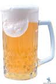

ИЗДАНИЕ 53
СПИРТ
1. В кадку наливают приблизительно 2 ведра горячей
воды и высыпают туда 8 кг. зерна. В образовавшееся тесто
наливают опять 2 ведра горячей воды, через некоторое вре
мя доливают холодной воды. Затем в кадку прибавляют
дрожжей. Закрывают на 3 суток одеждой для брожения. Че
рез 3 суток перебродивший затор перегоняют.
2. За 2 дня до начала варки определенное количество
ржаной муки, смешанной с мякиной, разводится частью
солода (зерна) в кадке. Чтобы довести эту массу до броже
ния, делают примолот из дрожжей несколько раз, от дей
ствия которого смесь поднимается в кадке и сильно скиса
ет. Через сутки-двое можно перегонять. Перед перегонкой
смесь разбавляют водой.
3. В заторный чан наливают воду температурой 36-48
градусов. Затем в чан высыпают солодовую, а затем несо
лодовую муку. Муку сыпят постепенно и тщательно разме
шивая, чтобы не было комков. Затем постепенно, переме
шивая, доливают горячей воды, доводя температуру зато
ра до 45 градусов. При этой температуре затор должен по
стоять 15-20 мин., а затем эту температуру поднимают уже
до 48-52 градусов и оставляют стоять до тех пор, пока не
кончится процесс сахарообрахования.
4. Солод разбавляется водой в соотношении 1:3 (1 часть
молотого зерна на 3 части воды). Для брожения добавляют
дрожжи (50 гр. дрожжей на 1 кг зерна). Полученная брага
ставится в теплое место на 10-15 мин. Она регулярно встря
хивается, с поверхности удаляется накипь и грязь. Когда
брага принимает горьковато-специфический вкус и конча
ется активное выделение газов, то приступают к перегонке
спирта.
5. Для получения спирта из сахарной свеклы брага гото
вится следующим образом. Емкость заполняется мелко на
резанной свеклой и заливается до краев водой. Затем она
помещается на огонь, закрывается крышкой и кипятится в
течение 1 -2 часов. Жидкость сливается в заранее приготов
ленный сосуд, а свекла вновь заливается водой, и вся про
цедура повторяется еще 2 раза.
6. 2 кг полтавской крупы заливается 4-5 литрами воды,
приготовленной из сахарной свеклы. Смесь помещается на
4-5 дней в теплое помещение с температурой 20-22 граду
са. Затем добавляется еще 15 литров свекольной воды. Все
это стоит в теплом помещении в течении 15 дней.
7. Спирт из плодов и ягод: 1 литр вишневого сока, 0,5
литра воды; 1 литр смеси соков красной и черной смороди
ны, 1 литр воды; 1 литр малинового сока, 0,5 литра воды; 1
литр яблочного сока, 0,1 литр воды; 1 литр сока крыжовни
ка, 0,2 литра воды.
8. Взять 1 кг зрелой рябины, раздавить ее пестиком в
ступке. Полученную смесь перекладывают в стеклянную
бутылку, заливают 10-12 литрами свежего хлебного кваса,
добавляют 50-70 гр. дрожжей. Брага ставится в комнате при
температуре 16 градусов. Когда брожение закончится,
смесь перемешивают и помещают в выгоночный аппарат.
Спирт перегоняют несколько раз.
9. Любой сок, купленный в магазине, годится для полу
чения высококачественного спирта. Для этого берется 9
литров сока, добавляется 150 гр. дрожжей и все это остав
ляют бродить в темном помещении при температуре 20-24
градуса. Когда брага поспеет, ее можно выгонять.
10. В чан помешают 1 кг хорошо растертого картофеля,
добавляют кипяток, 1 кг ржаной муки и немного соломы.
Вскоре солод делается светлым, а образование сахара за
вершается в течение 2 часов. Полученную жидкость слива
ют. Остатку дают стечь и снова заливают водой температу
рой 50 градусов. Мешают и через некоторое время слива
ют жидкость. Затем оба солода сливают в одну емкость и
подвергают брожению. После перегонки получается спирт
крепостью 19-20 градусов приятного вкуса.

ПИВО
Пиво из можжевельника: Ягоды можжевельника 200 гр., вода 2 литра, мед 50 гр., дрожжи 25 гр. Свежие ягоды можжевельника варить в воде 30 мин., процедить и охладить до комнатной температуры, добавить мед и дрожжи, размешать и поставить для брожения. Когда дрожжи поднимутся, снова размешать и разлить в бутылки. Закупорить пробками и поставить на 5 дней в прохладное место. Крепкость напитка 3-5 градусов.
Английское пиво: Взять 3,5 кг ячменя или овса и, постоянно помешивая, высыпать зерно так, чтобы оно не поджарилось. Зерна истолочь, насыпать в котел и залить 15 литрами воды (65 градусов), дать постоять 3 часа и осторожно слить жидкость. Снова залить оставшиеся в котле зерна 12 литрами воды (72 градуса) и через 2 часа слить. И еще раз залить зерна 12 литрами холодной воды и слить через 1,5 часа. Все эти три воды перемешать. В 2,5 ведрах теплой воды развести 6 кг патоки, влить в приготовленную жидкость,, добавить 200 гр. хмеля и все вместе вскипятить. Через 2 часа, когда жидкость остынет, влить в нее 2 ст. л. дрожжей, перемешать и оставить при комнатной температуре. Когда процесс брожения закончится, пиво перелить в бочку и оставить ее открытой на 3 суток. Затем заколотить втулкой и через 2 недели получится готовое пиво.
Домашнее пиво; В бочонок налить 2 ведра холодной воды, размешать в них 0,5 ведра ячменного солода и оставить на ночь. Утром перелить все это в котел, добавить полную чайную ложку соли и 2 часа кипятить на медленном огне. Затем добавить 6 стаканов хмеля и варить еще минут 20. Потом жидкость профильтровать через марлю, залить в бочонок и остудить. Добавить чашку дрожжей и чашку патоки, размешать и дать постоять день. Пиво разлить по бутылкам, подождать еще около суток и только затем закупорить. И уже через сутки напиток готов к употреблению.
Пиво батуринское: Взять 2,5 кг можжевельника, 8 кг ржаного солода, 80 гр. сухих яблок или груш. Солод залить водой и закипятить, через 5 мин. снять с огня и всыпать ягоды можжевельника и яблоки. Размешать и влить в бочонок, залить водой до половины. Забить и дать постоять сутки, потом ежедневно подливать воду, пока бочка не наполнится. Затем вынуть пробку, отверстие закрыть марлей (в это время пиво будет шуметь). Когда пиво перестанет шуметь - его можно употреблять.
Пиво запорожское: 100 гр. хмеля, хорошо растертого с мукой и 3 стаканами сахара, залить 10 литрами кипятка, дают настояться в течении 2-3 часов, процеживают, сливают его еще теплым в бочку, добавляют 2 стакана патоки и 50 гр. дрожжей, разведенных в теплом настое. Когда пиво перебродит, его разливают в бутылки, укупоривают пробками и хранят до употребления в холодном месте.
Пиво моншегорское: Пригоршню сухого хмеля, 2,5 кг ржаного солода, 600 гр. сахара заливают 4 литрами воды, ставят на огонь и кипятят 30 мин. После этого охлаждают до теплого состояния, добавляют 100 гр. разведенных в воде дрожжей, переливают в бочку, вливают еще 15 литров воды, размешивают, накрывают теплой тканью и дают бродить 4 суток.
Пиво можно подкрасить жженым сахаром.
Крымское светлое пиво: Положить в чугун 3 фунта нарезанного и высушенного ситного, 1,5 фунта ржаного солода, 10 зерен толченой гвоздики, 1 фунт ошпаренного хмеля, 10 гр. разведенных в воде дрожжей, накрыть салфеткой и поставить в теплое место. На другой день влить 10 бутылок кипяченой воды, размешать, накрыть плотнее крышкой и поставить на ночь в теплое место. Затем налить еще воды (до верху) и поставить еще на ночь в теплое место, после чего процедить пиво. Бутылки закупорить ошпаренными пробками, завязать тонкой проволокой. Поставить бутылки с готовым пивом на 10 дней в прохладное место.
Малороссийское темное пиво: Высушить 2 фунта белого хлеба и 2 фунта пеклеванного, предварительно нарезав его на куски и обсыпав немного солью и толченой гвоздикой, положить в кастрюлю, всыпать 1,5 фунта ржаного солода, 1 чайную ложку нетолченой корицы, 10 гр. дрожжей, разведенных в стакане теплой кипяченной воды, влить 5 бутылок воды, все хорошенько размешать и поставить в теплое место. Спустя 2 суток положить 0,5 фунта сухого хмеля, ошпаренного одной бутылкой кипятка, и 2 ст. ложки сахарного песка, влить 0,5 фунта распущенного мелко истолченого головного сахара, влить 15 бутылок кипяченной воды, все перемешать, всыпать 2 ст. ложки соды, перелить в чугун, накрыть крышкой и поставить в теплое место. На другой день профильтровать, разлить в бутылки и закупорить ошпаренными пробками и завязать тонкой проволокой и вынести на 3 дня в теплое место.
Московское трехгорное пиво: Положить в большой чугун 3 фунта хлеба, 2 фунта ржаного и 2 фунта пшеничного солода. 10 гр. дрожжей, разведенных в теплой кипяченой воде, положить 2 фунта сухого хмеля, ошпаренного кипятком, размешать, покрыть салфеткой и поставить на 5 часов в теплое место Затем влить 20 бутылок кипяченой воды, накрыть плотно крышкой и поставить в теплое место. На другой день слить осторожно настой, в густоту же влить 4 бутылки кипяченной воды, размешать и снова поставить на сутки, слить опять настой в ранее отлитый, всыпать 2 столовые ложки соды, дать выстоять час, процедить и разлить в бутылки.
Черное кисло-сладкое пиво: положить в чашку 5 фунтов высушенного ржаного хлеба, 2 фунта ржаного и 2 фунта пшеничного солода, 10 гр. дрожжей, разведенных в стакане кипяченной воды, 1 чайную ложку истолченного фиалкового корня, 1 чайную ложку корицы, 1 фунт темной сахарной патоки, 0,5 фунта изюма и 2 фунта сухого хмеля, ошпаренного кипятком, влить столько воды, чтобы масса напоминала густую сметану, накрыть салфеткой и поставить в теплое место на 5 часов. Затем влить 20 бутылок кипяченной воды, размешать, накрыть плотно крышкой, на другой день слить настой. В густоту влить 4 бутылки воды и поставить на 5-7 часов в теплое место, после чего настой слить в ранее отлитый, процедить, дать отстояться, закупорить ошпаренными пробками.
Уникальные издания.